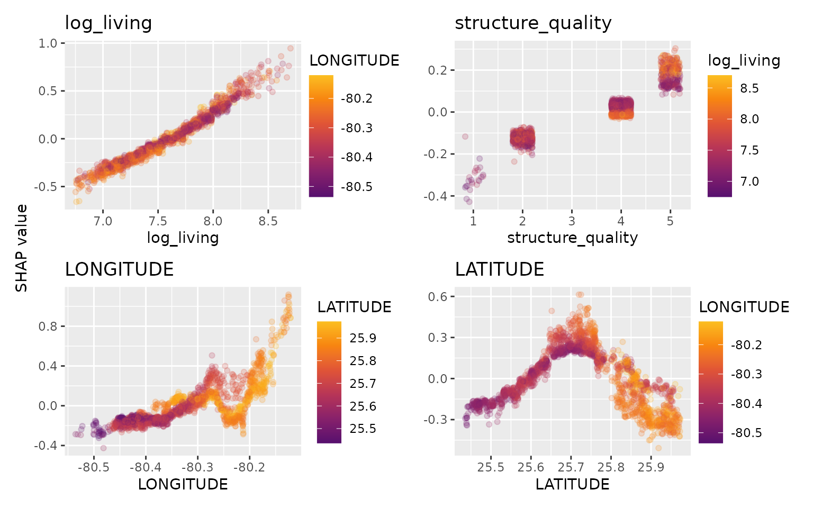
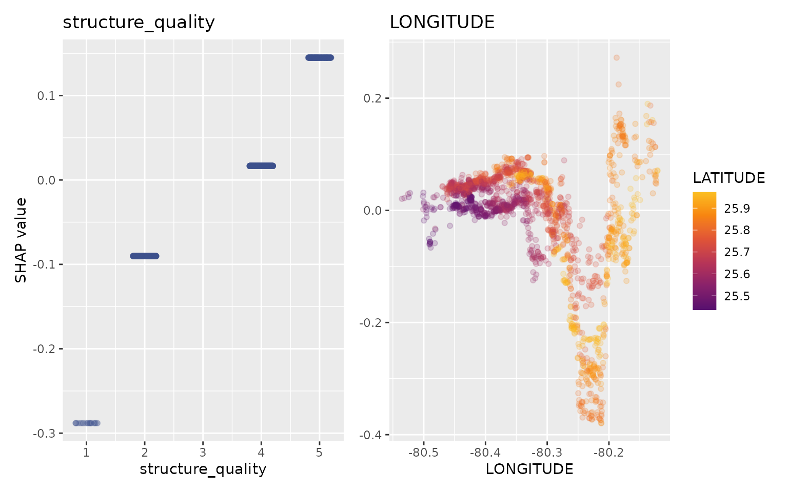

In a model with geographic components, we want to express a functional \(T\) (usually the expectation or a quantile) of a response \(Y\) as a function \(f\) of a set of geographic features (latitude/longitude and/or postal code and/or other features varying with location), and other features:
\[ T(Y \mid X^\textrm{geo}, X^\textrm{other}) \approx f(X^\textrm{geo}, X^\textrm{other}) \] Like any feature, the effect of a single geographic feature \(X^{\textrm{geo}, j}\) can be described using SHAP dependence plots. However, studying the effect of latitude (or any other location dependent feature) alone is often not very illuminating - simply due to strong interaction effects and correlations with other geographic features.
That’s where the additivity of SHAP values comes into play: The sum of SHAP values of all geographic components represent the total effect of \(X^\textrm{geo}\), and this sum can be visualized as a heatmap or 3D scatterplot against latitude/longitude (or any other geographic representation)
For illustration, we will use a beautiful house price dataset containing information on about 14’000 houses sold in 2016 in Miami-Dade County. Some of the columns are as follows:
(Italic features are geographic components.) For more background on this dataset, see Mayer et al. (2022).
We will fit an XGBoost model to explain log(price) as a function of lat/long, size, and quality/age.
library(xgboost)
library(ggplot2)
library(shapviz)
head(miami)
#> LATITUDE LONGITUDE PARCELNO SALE_PRC LND_SQFOOT TOT_LVG_AREA
#> 0 25.89103 -80.16056 622280070620 440000 9375 1753
#> 1 25.89132 -80.15397 622280100460 349000 9375 1715
#> 2 25.89133 -80.15374 622280100470 800000 9375 2276
#> 3 25.89176 -80.15266 622280100530 988000 12450 2058
#> 4 25.89182 -80.15464 622280100200 755000 12800 1684
#> 5 25.89206 -80.16135 622280070180 630000 9900 1531
#> SPEC_FEAT_VAL RAIL_DIST OCEAN_DIST WATER_DIST CNTR_DIST SUBCNTR_DI HWY_DIST
#> 0 0 2815.9 12811.4 347.6 42815.3 37742.2 15954.9
#> 1 0 4359.1 10648.4 337.8 43504.9 37340.5 18125.0
#> 2 49206 4412.9 10574.1 297.1 43530.4 37328.7 18200.5
#> 3 10033 4585.0 10156.5 0.0 43797.5 37423.2 18514.4
#> 4 16681 4063.4 10836.8 326.6 43599.7 37550.8 17903.4
#> 5 2978 2391.4 13017.0 188.9 43135.1 38176.2 15687.2
#> age avno60plus month_sold structure_quality
#> 0 67 0 8 4
#> 1 63 0 9 4
#> 2 61 0 2 4
#> 3 63 0 9 4
#> 4 42 0 7 4
#> 5 41 0 2 4
x_coord <- c("LATITUDE", "LONGITUDE")
x_nongeo <- c("TOT_LVG_AREA", "LND_SQFOOT", "structure_quality", "age")
x <- c(x_coord, x_nongeo)
# Train/valid split
set.seed(1)
ix <- sample(nrow(miami), 0.8 * nrow(miami))
X_train <- data.matrix(miami[ix, x])
X_valid <- data.matrix(miami[-ix, x])
y_train <- log(miami$SALE_PRC[ix])
y_valid <- log(miami$SALE_PRC[-ix])
# Fit XGBoost model with early stopping
dtrain <- xgb.DMatrix(X_train, label = y_train)
dvalid <- xgb.DMatrix(X_valid, label = y_valid)
params <- list(learning_rate = 0.2, objective = "reg:squarederror", max_depth = 5)
fit <- xgb.train(
params = params,
data = dtrain,
watchlist = list(valid = dvalid),
early_stopping_rounds = 20,
nrounds = 1000,
callbacks = list(cb.print.evaluation(period = 100))
)
#> [1] valid-rmse:9.784245
#> Will train until valid_rmse hasn't improved in 20 rounds.
#>
#> [101] valid-rmse:0.152615
#> [201] valid-rmse:0.149175
#> Stopping. Best iteration:
#> [210] valid-rmse:0.148793Let’s first study selected SHAP dependence plots, evaluated on the validation dataset with around 2800 observations. Note that we could as well use the training data for this purpose, but it is a bit too large.
sv <- shapviz(fit, X_pred = X_valid)
sv_dependence(
sv,
v = c("TOT_LVG_AREA", "structure_quality", "LONGITUDE", "LATITUDE"),
alpha = 0.2
)
# And now the two-dimensional plot of the sum of SHAP values
sv_dependence2D(sv, x = "LONGITUDE", y = "LATITUDE") +
coord_equal()The last plot gives a good impression on price levels.
Notes:
We will now change above model in two ways, not unlike the model in Mayer et al. (2022):
The second step leads to a model that is additive in each non-geographic component and also additive in the combined location effect. According to the technical report Mayer (2022), SHAP dependence plots of additive components in a boosted trees model are shifted versions of corresponding partial dependence plots (evaluated at observed values). This allows a “Ceteris Paribus” interpretation of SHAP dependence plots of corresponding components.
# Extend the feature set
more_geo <- c("CNTR_DIST", "OCEAN_DIST", "RAIL_DIST", "HWY_DIST")
x2 <- c(x, more_geo)
X_train2 <- data.matrix(miami[ix, x2])
X_valid2 <- data.matrix(miami[-ix, x2])
dtrain2 <- xgb.DMatrix(X_train2, label = y_train)
dvalid2 <- xgb.DMatrix(X_valid2, label = y_valid)
# Build interaction constraint vector
ic <- c(
list(which(x2 %in% c(x_coord, more_geo)) - 1),
as.list(which(x2 %in% x_nongeo) - 1)
)
# Modify parameters
params$interaction_constraints <- ic
fit2 <- xgb.train(
params = params,
data = dtrain2,
watchlist = list(valid = dvalid2),
early_stopping_rounds = 20,
nrounds = 1000,
callbacks = list(cb.print.evaluation(period = 100))
)
#> [1] valid-rmse:9.784974
#> Will train until valid_rmse hasn't improved in 20 rounds.
#>
#> [101] valid-rmse:0.161874
#> [201] valid-rmse:0.156760
#> Stopping. Best iteration:
#> [245] valid-rmse:0.155253
# SHAP analysis
sv2 <- shapviz(fit2, X_pred = X_valid2)
# Two selected features: Thanks to additivity, structure_quality can be read as
# Ceteris Paribus
sv_dependence(sv2, v = c("structure_quality", "LONGITUDE"), alpha = 0.2)
# Total geographic effect (Ceteris Paribus thanks to additivity)
sv_dependence2D(sv2, x = "LONGITUDE", y = "LATITUDE", add_vars = more_geo) +
coord_equal()Again, the resulting total geographic effect looks reasonable. Note that, unlike in the first example, there are no interactions to non-geographic components, leading to a Ceteris Paribus interpretation.